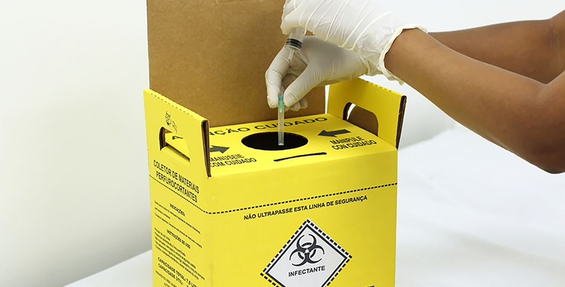
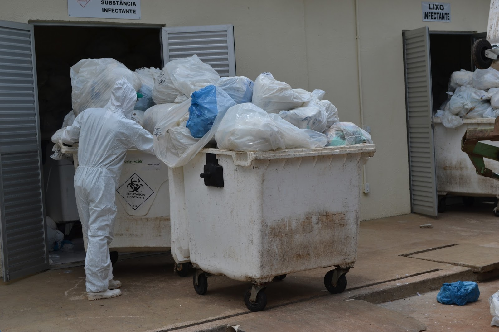

Coleta de Resíduos de Saúde

Os resíduos de serviços de saúde (RSS) são definidos com base na Resolução da Diretoria Colegiada da ANVISA (RDC) nº 222 de 2018 como aqueles gerados nos serviços cujas atividades estejam relacionadas com a atenção à saúde humana ou animal, inclusive os serviços de assistência domiciliar; laboratórios analíticos de produtos para saúde; necrotérios, funerárias e serviços onde se realizem atividades de embalsamamento (tanatopraxia e somatoconservação); serviços de medicina legal; drogarias e farmácias, inclusive as de manipulação; estabelecimentos de ensino e pesquisa na área de saúde; centros de controle de zoonoses; distribuidores de produtos farmacêuticos, importadores, distribuidores de materiais e controles para diagnóstico in vitro; unidades móveis de atendimento à saúde; serviços de acupuntura; serviços de piercing e tatuagem, salões de beleza e estética, dentre outros afins.

Visita in loco ao local de destinação dos resíduos.Empresa Essencis MG Soluções Ambientais